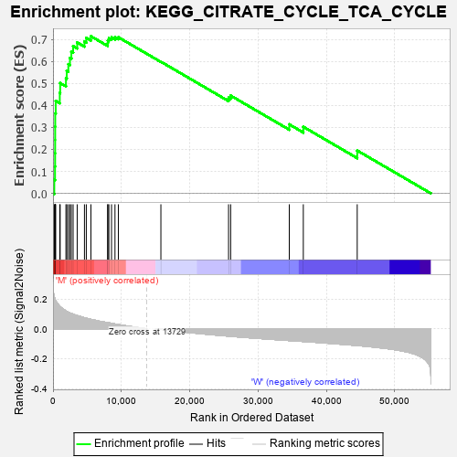
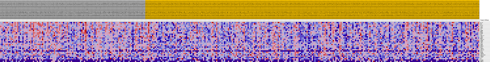
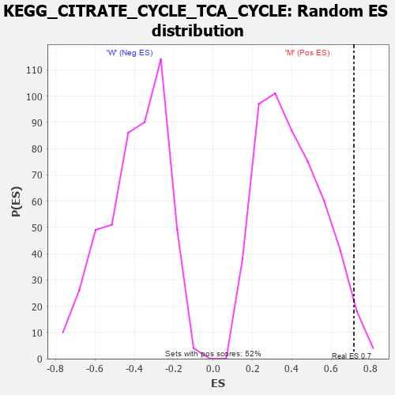

| Dataset | MUC16.MUC16.cls#M_versus_W.MUC16.cls#M_versus_W_repos |
| Phenotype | MUC16.cls#M_versus_W_repos |
| Upregulated in class | M |
| GeneSet | KEGG_CITRATE_CYCLE_TCA_CYCLE |
| Enrichment Score (ES) | 0.71487457 |
| Normalized Enrichment Score (NES) | 1.7856889 |
| Nominal p-value | 0.026871402 |
| FDR q-value | 0.066518 |
| FWER p-Value | 0.318 |

| PROBE | DESCRIPTION (from dataset) | GENE SYMBOL | GENE_TITLE | RANK IN GENE LIST | RANK METRIC SCORE | RUNNING ES | CORE ENRICHMENT | |
|---|---|---|---|---|---|---|---|---|
| 1 | DLAT | na | 185 | 0.211 | 0.0622 | Yes | ||
| 2 | FH | na | 294 | 0.198 | 0.1217 | Yes | ||
| 3 | DLST | na | 308 | 0.196 | 0.1823 | Yes | ||
| 4 | ACO2 | na | 314 | 0.195 | 0.2429 | Yes | ||
| 5 | SDHA | na | 316 | 0.195 | 0.3035 | Yes | ||
| 6 | CS | na | 324 | 0.195 | 0.3638 | Yes | ||
| 7 | SDHD | na | 394 | 0.188 | 0.4209 | Yes | ||
| 8 | MDH1 | na | 988 | 0.150 | 0.4568 | Yes | ||
| 9 | PDHB | na | 1047 | 0.148 | 0.5018 | Yes | ||
| 10 | DLD | na | 1893 | 0.119 | 0.5235 | Yes | ||
| 11 | SUCLA2 | na | 2007 | 0.116 | 0.5575 | Yes | ||
| 12 | IDH1 | na | 2241 | 0.111 | 0.5877 | Yes | ||
| 13 | MDH2 | na | 2478 | 0.106 | 0.6163 | Yes | ||
| 14 | SUCLG1 | na | 2683 | 0.102 | 0.6443 | Yes | ||
| 15 | SDHB | na | 2942 | 0.097 | 0.6699 | Yes | ||
| 16 | IDH2 | na | 3537 | 0.088 | 0.6866 | Yes | ||
| 17 | ACO1 | na | 4599 | 0.074 | 0.6904 | Yes | ||
| 18 | SDHC | na | 4869 | 0.071 | 0.7074 | Yes | ||
| 19 | PDHA1 | na | 5546 | 0.063 | 0.7149 | Yes | ||
| 20 | PCK2 | na | 7998 | 0.041 | 0.6833 | No | ||
| 21 | IDH3A | na | 8018 | 0.041 | 0.6957 | No | ||
| 22 | SUCLG2 | na | 8172 | 0.040 | 0.7053 | No | ||
| 23 | PCK1 | na | 8560 | 0.036 | 0.7095 | No | ||
| 24 | OGDH | na | 9066 | 0.032 | 0.7104 | No | ||
| 25 | IDH3B | na | 9561 | 0.028 | 0.7103 | No | ||
| 26 | SUCLG2P2 | na | 15782 | -0.004 | 0.5989 | No | ||
| 27 | IDH3G | na | 25681 | -0.049 | 0.4348 | No | ||
| 28 | ACLY | na | 25989 | -0.050 | 0.4447 | No | ||
| 29 | PC | na | 34564 | -0.078 | 0.3139 | No | ||
| 30 | OGDHL | na | 36617 | -0.085 | 0.3030 | No | ||
| 31 | PDHA2 | na | 44503 | -0.112 | 0.1949 | No |

